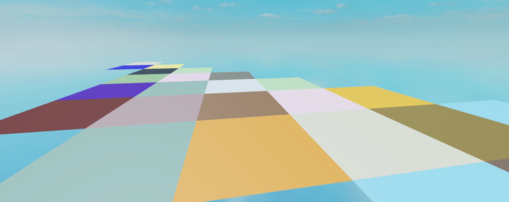

Drawing Outside the Lines III - ROBLOX Ocean
October 23, 2021
Background
ROBLOXis a popular online game platform and game engine, best known for the fact that until relatively recently, games made within this engine must be comprised entirely out of LEGO-like blocks. This changed when ROBLOX added support for importing static and eventually skinned meshes (i.e. rigged for animation). Through this new mechanic, it became possible to create a much more realistic and performant simulation of an ocean than was previously possible.
My experimentation with implementing ocean rendering in OpenGL is documented in aprevious postand forms the background knowledge I had coming into this project.
Constraints
Programming in ROBLOX is done through their superset of Lua 5.1 called Luau, which runs in a single thread. There is no GPU/shader access available to the user, and no ability to query or modify mesh vertex data. However, there is the ability to import meshes with animation bones whose positions are scriptable. Via profiling, setting the transformation of the bones is the single most expensive operation in this project, at approximately 4ms to set the Position property of 2304 (48^2) bones, and 2ms to set the Transform property on my machine. In addition, the following relevant constraints are present:
- The limit of bones per imported mesh is approximately 3000
- The size limit for a single Part (including MeshParts) is 2048 studs per axis
- There is a significant cost to the creation of new instances in game
- There is a somewhat significant cost to repositioning large numbers of Parts in a single frame
World Model
The basis of the ocean's world model is a square plane mesh subdivided into a grid, with a bone on each vertex weighted to solely move that vertex. This mesh was generated programmatically with Python in Blender, and then imported into ROBLOX. Several different tile densities were experimented with, all in powers of 2, including 8x8, 16x16, 32x32, and 48x48. Due to constraint 1, sizes above 48x48 were not tried, as 64x64 was too large to import.

Since setting bone transforms is so expensive, optimizing the bones visible and updated in the viewport was crucial. My initial attempt was with theprojected gridutilized in my OpenGL ocean. While this was both efficient and somewhat successful, it suffered from 2 major pitfalls: constraints 1 and 2. The ocean part, which was fit into the camera frustum, could not extend beyond 2048 studs from the camera, which in ROBLOX scaling was nowhere near far enough to reach the far clipping plane. In addition, the low vertex resolution of the mesh caused the artifacts from the projected grid to be very significant, especially towards the far edge of the mesh.
The solution to these problems was to modify the method into a top-down projected grid. The world is divided into axis-aligned cells, and mesh tiles are dynamically placed in the cells intersecting with the camera frustum. Since there are now multiple, fixed size cells, they can extend further towards the far clipping plane and maintain shape without causing artifacts. To mitigate constraint 3, these cells were kept in a pool and cycled out as infrequently as possible.
{kind=link}
{kind=link}
Waveform
Much like with the world model, my initial attempt stemmed from my OpenGL solutions, and I briefly experimented with implementing a Lua version of the Tessendorf waves, complete with a single threaded FFT implementation. This was unsurprisingly, much too inefficient to be useful. After some stumbling, the most efficient and surprisingly-functional solution turned out to be a modification of Gerstner waves I will refer to as Interpolated Gerstner. Gerstner waves are implemented by iterating over a table of wave data containing amplitude, frequency, and direction, and performing a simple sum of sines at every point of interest. With low numbers of waves and points of interest, this method can be quite performant even with a single threaded CPU implementation. It also comes with the bonus that waves do not necessarily have to be generated with a common base frequency to ensure tileability, as they can be computed per-point.
Unfortunately, Gerstner waves alone are still not performant enough to use on their own in ROBLOX, so the solution is to simply divide up the total computations needing to be done for the waves among several frames. The ocean is divided up such that every cell gets updated approximately once every 20 frames, with the Gerstner position calculated for its position at t+20 frames. Every frame, each visible point is interpolated from its current position towards its calculated future position. This functions surprisingly accurately, and saves significant calculation time overall.
Additional Optimization
With the above methods, the main issue to contend with in order to reach peak performance is to minimize wasted calculations on wave displacement, as well as maximize the tile size to reduce the effects of constraint 4, all while keeping the overall bone density as tight as possible to maximize visual acuity. In order to reach this goal, the tile MeshParts are split into further subdivided "virtual" tiles, which are culled by the camera frustum, allowing larger parts to be used while also culling more superfluous bones.
To further maximize efficiency, bone displacement beyond a maximum distance is interpolated down to 0, and completely flat tiles are placed beyond them, to allow the dynamic ocean to blend into a far away static plane.